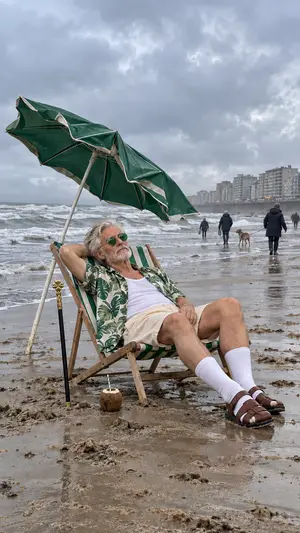
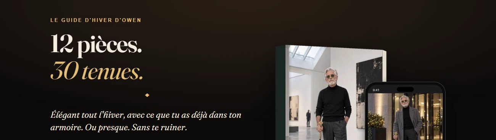
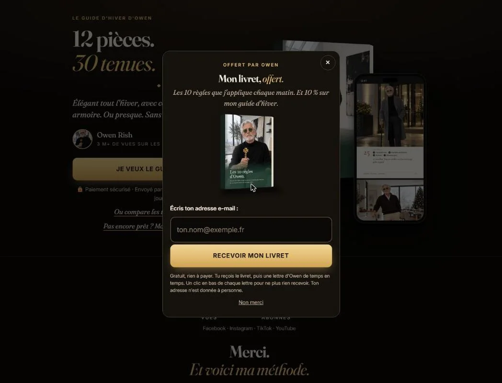
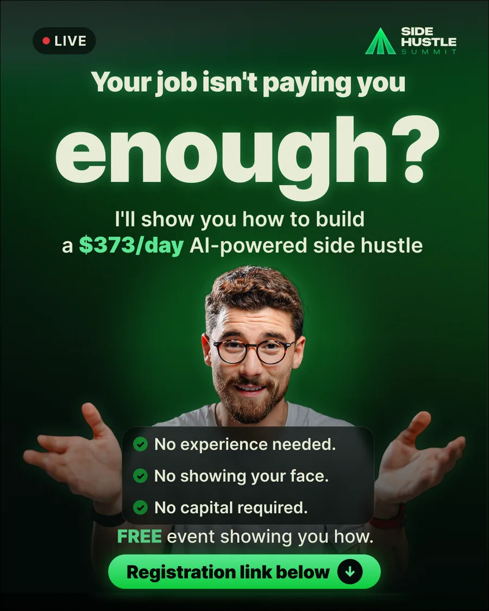
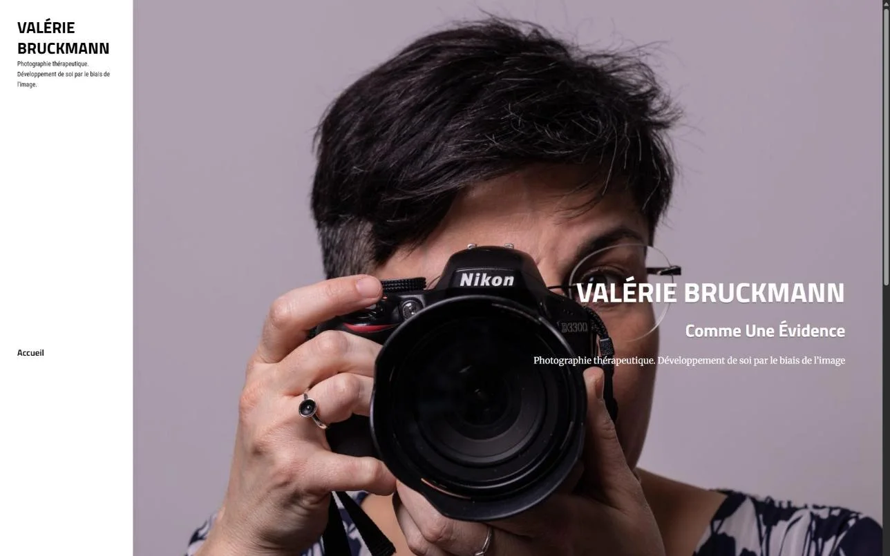
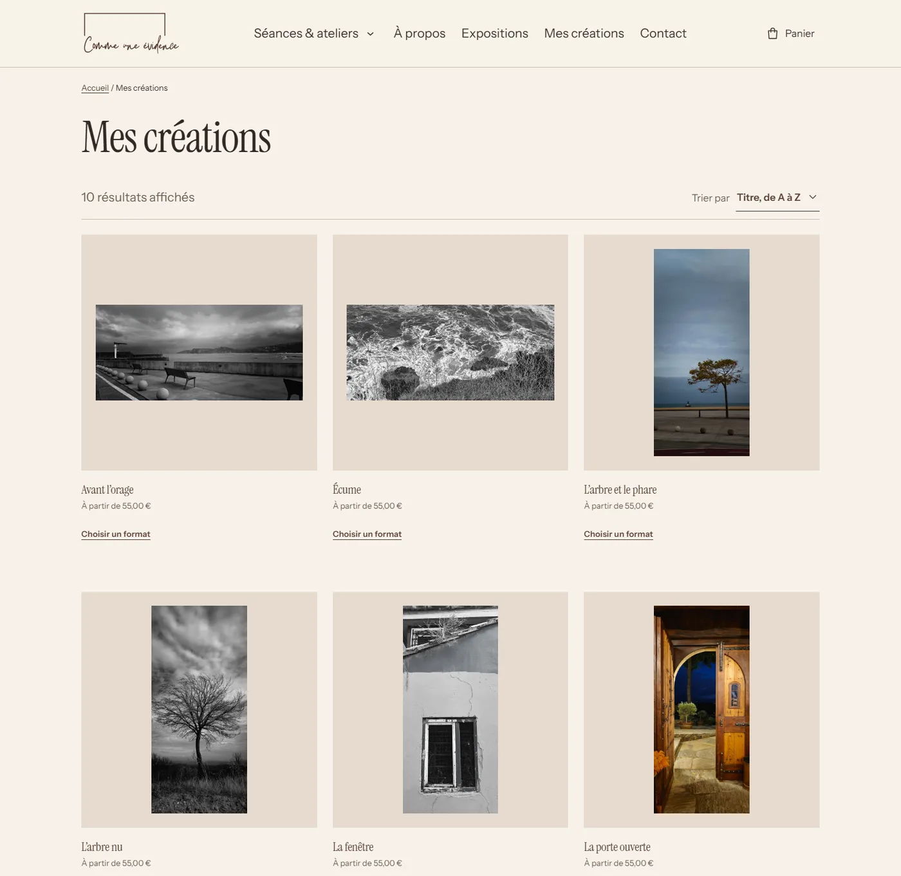

Thomas Fellmann, marketeur de contenu à Liège
Thomas Fellmann, marketeur de contenu à Liège
Disponible tout de suite, en Belgique ou à distance
J’ai construit une audience de 15 000 abonnés en trois semaines. Seul, avec l’IA.
Vidéo courte, réseaux sociaux, pages construites pour vendre. Je cherche une équipe meilleure que moi pour le refaire sur votre marque.


Quatre preuves. Commencez par celle qui vous intéresse.

Owen Rish : une audience créée de zéro
Un personnage d’une soixantaine d’années qui explique aux hommes de plus de 50 ans comment redevenir attirants. Il est créé avec l’IA. Le public, les formats et les chiffres sont réels.

- Le problème
- Les hommes de 50 à 70 ans sont sur Facebook tous les jours, et presque aucun créateur ne leur parle.
- Ce que j’ai fait
- J’ai étudié les comptes qui avaient déjà conquis ce public, créé Owen, figé trois formats de vidéo et conçu une chaîne de production qui sort trois vidéos par jour.
- Le résultat
- 15 394 abonnés en 20 jours et 3,3 M de vues Facebook en 28 jours, à 92,7 % auprès de personnes qui ne le suivaient pas.
Mon rôle : seul. Étude du public, personnage, scripts, production, publication et mesure.
Trois formats, figés une fois qu’ils ont marché
Une erreur de style, puis la correction. Le moteur de portée : 63 200 vues en médiane.
Owen note un look sur dix. Deux fois plus de commentaires.
Ce qu’une partenaire remarque, avec un livret offert à la fin.
Médianes sur les publications Facebook d’au moins trois jours, du 20 oct. au 5 nov. 2026. Sur YouTube, les Shorts « Arrête ça » les plus vus sont regardés à 73 à 105 % de leur durée : les gens les revoient.
Les chiffres, jour par jour
Facebook a décollé au sixième jour. Instagram a grandi plus lentement, mais avec un meilleur public : 46 % de Français, le marché qui peut réellement acheter.
15 394 abonnés gagnés en 20 jours
- 26 oct. Les premières vidéos dépassent 100 000 vues par jour
- 1 nov. Facebook remet en avant d’anciens reels : 1,5 M de vues en deux jours
- 7 nov. Les chiffres tournent : je change de cap
Données quotidiennes exportées de Meta Business Suite le 8 novembre 2026.


Ce que les spectateurs ont écrit sous les vidéos
Personne n’a été payé ni sollicité. Trois choses reviennent : des remerciements, des demandes pour recevoir le livret, et une question que je n’avais pas prévue.
« Vous devriez vous dire et nous dire ou on peut acheter pas trop cher ça serait pas mal aussi et pour femme egalement »
- ≈ 100demandes « REGARD » en une semaineLe mot à écrire en commentaire pour recevoir le livret. Facebook seul, relevé du 8 nov. 2026.
- 1 258visites sur la page du livretDes gens qui ont quitté Facebook pour aller sur le site d’Owen. Systeme.io, au 14 nov. 2026.
- 10adresses e-mail, soit 0,79 %La demande existe. C’est la page qui perd les gens, et c’est mon prochain chantier.
Bravo, nous les femmes aussi ont regarde un homme, merçi pour vos vidéos
Le problème est que beaucoup de personnes ont perdu le sens de l'allure...de la séduction…
Merci pour tout vos conseils
10/10 très élégant.....
Ça c'est la classe !!!
la tenue classique ne meurt pas
Vrais commentaires Facebook, recopiés tels quels, fautes comprises. Noms et photos retirés ; captures conservées (4 nov. 2026).
La machine derrière trois vidéos par jour
Personne ne fabrique 74 vidéos à la main en quatre semaines. J’ai donc conçu une chaîne de production que je pilote avec Claude Code et Codex. Les outils font le volume ; je prends les décisions : quels formats vivent, ce qu’Owen ne dirait jamais, quand s’arrêter.
Recherche
Gros comptes et recherches du public, avant toute idée.
Brief
Accroche, texte et scène écrits d’abord.
Images
Générées, puis un score d’identité sur chacune.
Voix
ElevenLabs, une voix, une vitesse.
Montage
Des scripts Python coupent et calent les sous-titres.
Contrôles
Lèvres, volume, cadrage, puis publication.
Mesure
Relevé du dimanche ; décisions écrites.


Chaque scène est écrite avant d’être générée : le lieu, la lumière, et ce qu’un inconnu doit comprendre en une seconde.
Ce que les chiffres m’ont appris
Trois semaines après le décollage, trois chiffres disaient que quelque chose n’allait pas.
- 5,4 → 3,1abonnés pour 1 000 vues sur Facebook, en une semaine
- 41 %du public en Afrique du Nord, où payer en ligne est difficile
- 10personnes seulement avaient laissé leur e-mail
J’ai noté mon propre projet 3 sur 10 et lancé une étude de marché. Les hommes de 50 ans ne cherchent pas « comment s’habiller après 50 ans ». Ils cherchent comment rester attirants. Owen est donc passé du style à « rester désirable, à deux, après 50 ans », avec sa compagne Colette, Instagram d’abord, et le livret offert se débloque désormais contre une adresse e-mail.


La boutique : construite pour vendre
- Le problème
- Les vues ne paient pas. Il manquait un endroit où cette audience puisse acheter.
- Ce que j’ai fait
- Une boutique Shopify sur le domaine d’Owen, construite en trois jours, avec des sections sur mesure dans le thème. Chacune a un seul rôle.
- Le résultat
- Boutique prête, en mode aperçu. Je n’ouvre pas les ventes tant que l’activité n’est pas déclarée : pas encore de chiffre de vente à montrer.
Mon rôle : seul. Structure de l’offre, sections sur mesure dans le thème Shopify et parcours jusqu’à l’achat.
Deux de ces sections fonctionnent ici même. Essayez-les.
Appuie sur ce que tu as déjà dans ton armoire.
0
282 €
Mêmes pièces, mêmes prix et mêmes règles de tenues que sur la boutique.
Le visiteur coche ce qu’il possède déjà. La page compte combien des 30 tenues il peut porter aujourd’hui et ce que coûtent les pièces manquantes. Le visiteur se vend le guide à lui-même.
Cochez deux ou trois pièces et regardez les chiffres.

Démonstration du mécanisme. Sur la boutique, la date vient du serveur, pas du visiteur.
24 portes, une par matin du 1er au 24 décembre. Le thème vérifie la date à Bruxelles et n’écrit une porte dans la page que le jour venu : l’acheteur revient chaque matin, et personne ne peut regarder la suite dans le code.
Changez la date et regardez les portes s’ouvrir.



Construite du 4 au 6 novembre 2026. Captures prises en mode aperçu le 13 novembre.
Huit publicités en 24 heures
- Le problème
- J’ai postulé chez Consulting.com (l’entreprise d’Iman Gadzhi) pour un poste de Marketing Designer. Après les premiers tests, l’épreuve pratique de leur recrutement arrive à 8 h 30 : créer quatre publicités en deux formats pour un événement gratuit de cinq jours, avec un seul objectif, les inscriptions.
- Ce que j’ai fait
- Trois règles tenues sur les huit visuels : un mot ou un chiffre géant par publicité, une lumière de cinéma sur le visage, aucune boîte sauf le bouton.
- Le résultat
- Huit visuels rendus le soir même, le 12 nov. 2026. Leur décision de recrutement est en attente.
Mon rôle : mise en page, hiérarchie et système visuel. Marque, textes et photos fournis par Consulting.com.
Cliquez sur une publicité pour l’agrandir. Ouvrir le fichier Figma




Avant / après : le site de ma marraine
- Le problème
- Le site de ma marraine, photographe thérapeutique, s’ouvre sur une photo plein écran à côté d’un menu à un seul lien : le visiteur ne comprend ni ce qu’elle propose ni comment réserver.
- Ce que j’ai fait
- Je l’ai reconstruit sur WordPress autour des situations dans lesquelles les gens arrivent (pour eux-mêmes, pour un mariage, en groupe), avec une boutique de tirages, un logo, des mentions légales et un bandeau cookies.
- Le résultat
- La nouvelle version est en validation finale avec elle avant la mise en ligne.
Mon rôle : tout, bénévolement.
Faites glisser la poignée pour comparer.

Avant : valeriebruckmann.be, en ligne le 13 novembre 2026.


Les questions que vous vous posez
Un personnage créé avec l’IA, est-ce que ça compte ?
Le personnage est généré, le public ne l’est pas. Les 3,3 M de vues et les 15 394 abonnés sont de vraies personnes, et 92,7 % d’entre elles ne suivaient pas Owen. Ce qui a produit ce résultat, c’est l’étude du public, les accroches et la régularité.
Combien ça a rapporté ?
Rien pour l’instant. La boutique est prête, mais je n’ouvre pas les ventes tant que l’activité n’est pas déclarée. Je préfère vous montrer une boutique sans chiffre de vente qu’un chiffre que je n’aurais pas dû faire.
Pourquoi chercher un emploi si le projet marche ?
Parce que j’en ai mesuré les limites moi-même : beaucoup de vues, très peu d’inscrits, pas encore de vente. Et parce que j’apprends plus vite au milieu de gens meilleurs que moi que seul devant mes chiffres.
Que savez-vous faire sans l’IA ?
L’IA fait le volume, pas les choix. Décider à qui parler, quelle accroche garder et quoi arrêter, c’est mon travail. Avant Owen, j’ai organisé une journée médicale pour 400 personnes, vendu en anglais tous les jours à Malte et animé des communautés de 10 000 à 40 000 membres.
Quelle expérience avez-vous en entreprise ?
Trois ans au CHR de la Citadelle (stage, bénévolat puis job étudiant), un stage marketing au Télévie, un stage de vente chez Celio à Malte et du freelance de 2021 à 2025, pour plus de 150 clients. Je n’ai pas encore eu de poste à temps plein en marketing : c’est ce que je cherche.
Quand, où, sous quel contrat ?
Tout de suite. À Liège, ailleurs en Belgique ou à distance. CDD, intérim ou CDI. Français langue maternelle, anglais B2.
Cinq ans à apprendre en faisant
Avant Owen, j’ai animé des communautés en ligne de 10 000 à 40 000 membres, créé des chaînes YouTube pour un public américain et j’en ai vendu plusieurs, organisé une journée médicale pour 400 personnes à l’hôpital, et vendu en anglais tous les jours pendant un stage à Malte. J’ai terminé mon bachelier en marketing à HELMo en 2026.
Owen, c’est la première fois que j’ai tout réuni dans un seul projet, et la première fois que j’ai vu jusqu’où ça pouvait aller. Je donne le meilleur avec une échéance serrée, un objectif clair et aucun retour en arrière possible.
- 2026Bachelier en marketing, HELMo, Liège
- 2021–2024CHR Citadelle, Liège : journée médicale jusqu’à 400 personnes, vidéos de recrutement et de prévention, changement d’identité
- 2024Stage marketing, Télévie au CHU de Liège : sponsoring des 24h Vélo
- 2023Stage vente, Celio, Sliema, Malte, en anglais
- 2021–2025Freelance, plus de 150 clients via ComeUp : réseaux sociaux, vidéo, communautés en ligne, Shopify
Français langue maternelle, anglais B2, notions de néerlandais.
Ce que vous obtenez
- 24 h
De la vitesse sous pression
Huit visuels publicitaires conçus et rendus en 24 heures pour une épreuve de recrutement.
- 7 étapes
Des systèmes, pas des coups
Une chaîne de production avec des contrôles automatiques du visage, des lèvres, du volume et du cadrage.
- 92,7 %
Des accroches qui touchent des inconnus
La part des vues Facebook d’Owen venant de personnes qui ne le suivaient pas.
- −43 %
Les données avant l’ego
La baisse d’abonnés par vue en une semaine. Les vues tenaient encore : j’ai repositionné Owen sans attendre qu’elles chutent.
Donnez‑moi un vrai brief et une échéance. Jugez‑moi sur ce que je vous rends.
thomas.fellmnn@gmail.com. Basé à Liège. Disponible tout de suite, sur place ou à distance.